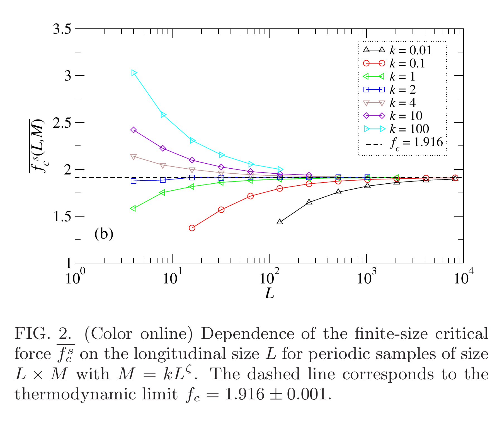
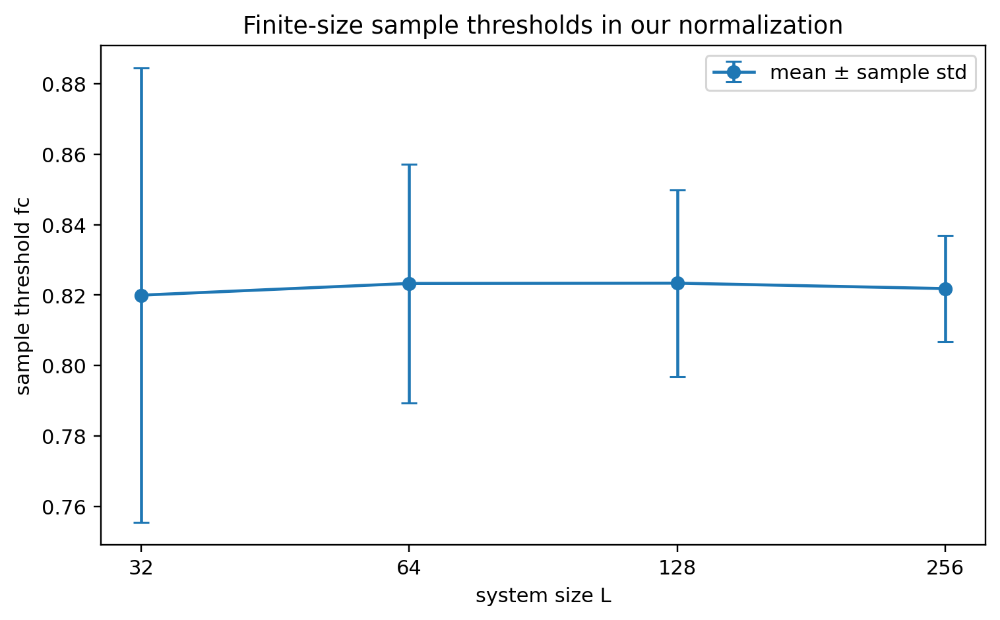
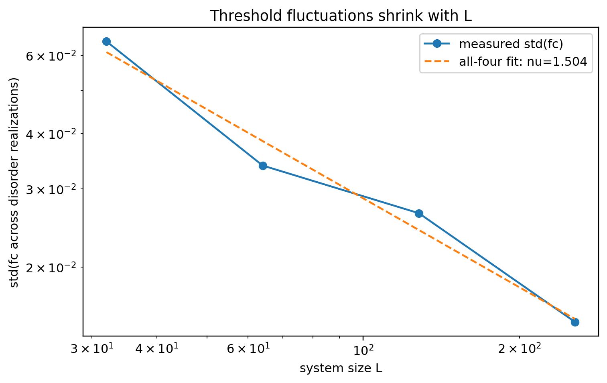
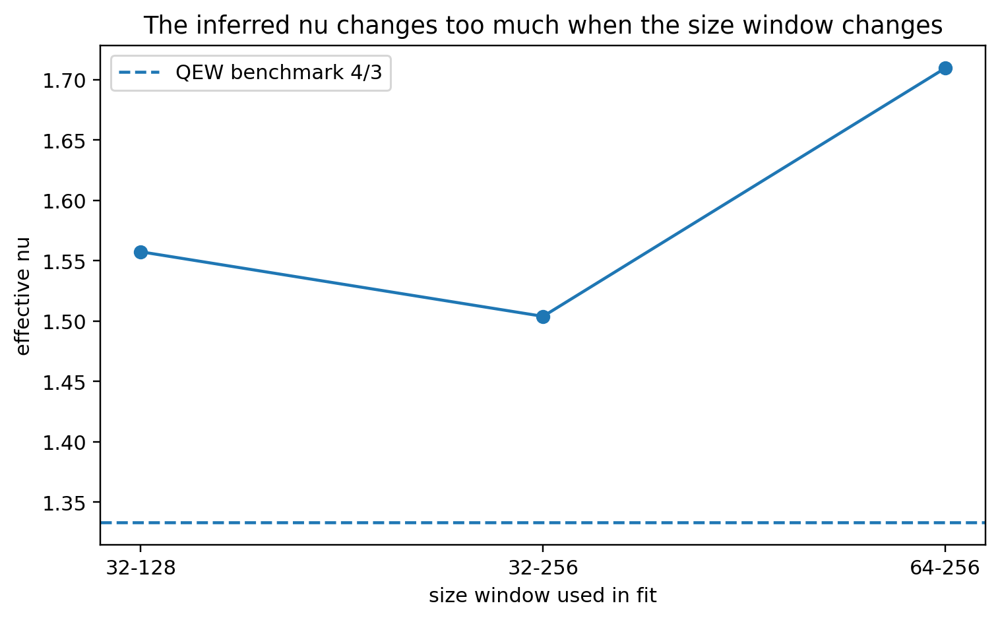
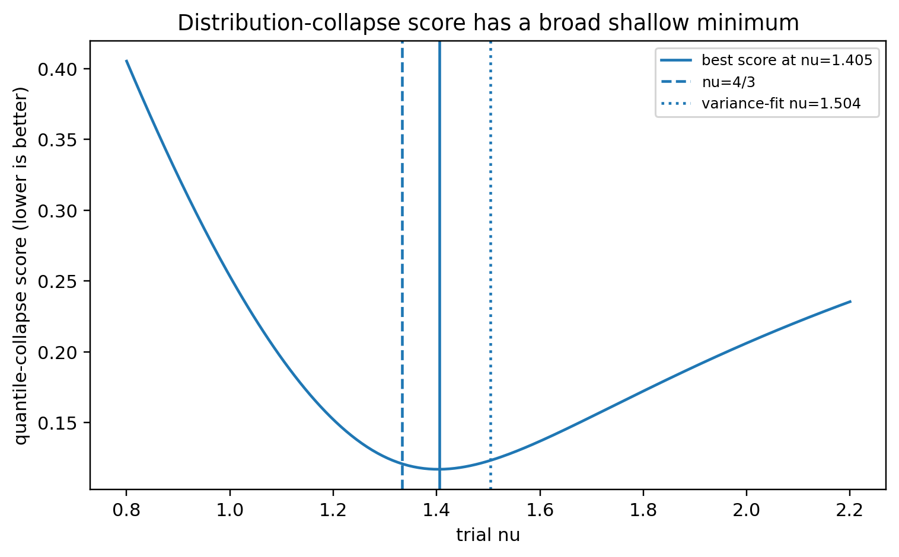

Learning Sliding Ferroelectricity / 复现实验室 / 第 11 课
真实模拟图论文原图完整裁切finite-size scaling（有限尺寸标度）
先看 fc(L)，再看它的样本间波动
这课最容易犯的错，是把“平均阈值随尺寸变化”和“阈值分布宽度随尺寸收缩”混成同一件事。正确顺序是：论文先告诉我们有限尺寸阈值会受 L 和横向几何影响 → 我们先画同一种平均 fc(L) → 再用同一批独立无序样本的 std(fc) 估计 ν → 最后检查 ν 对尺寸区间是否稳定。
1 · 论文 Fig.2平均有限尺寸阈值随 L 和横向尺度方案改变。
2 · 我们的平均 fc同样画 L→阈值，但不比较绝对数值。
3 · 对 ν 敏感的量std(fc) 随 L 收缩。
4 · 尺寸区间判据一个斜率不够，换尺寸区间后仍稳定才有资格谈 ν。
0 · 论文原图：有限尺寸临界力到底在画什么？

先别找 ν。 这张论文图最直接说明的是：有限系统里的 fc 本身不是一个“尺寸无关常数”；L 和横向几何都会留下 finite-size correction（有限尺寸修正）。
1 · 先把我们的平均 fc(L) 画在同一种坐标上

| L | M 网格 | 平均 fc | 独立无序样本 |
|---|---|---|---|
| 32 | 320 | 0.819978841 | 48 |
| 64 | 736 | 0.823315430 | 48 |
| 128 | 1728 | 0.823396810 | 48 |
| 256 | 4096 | 0.821850586 | 48 |
这里不能和论文的 fc≈1.916 比大小。 无序归一化、力单位、临界态算法和有限几何都不同。可比较的是“有限尺寸阈值必须被控制”，不是某个具体阈值数值。
2 · ν 不是从平均 fc 读出来的：要看分布宽度
对每个 L，我们实际有 48 个单样本阈值。对 ν 敏感的是这些阈值的样本间涨落：
std(fcsample) ∼ L−1/ν

| L | std(fc) |
|---|---|
| 32 | 0.064453427 |
| 64 | 0.033881635 |
| 128 | 0.026465858 |
| 256 | 0.015059779 |
同一套回归分析先在目标 ν=4/3 的合成数据上做已知答案测试：恢复得到 ν=1.318867，测试通过。这说明当输入确实遵守指定的有限尺寸幂律时，分析代码能够把指数读出来。
3 · 为什么四尺寸 ν=1.503976 仍然不能当普适结果？

| 尺寸区间 | 有效 ν |
|---|---|
| L=32,64,128 | 1.557481 |
| L=32,64,128,256 | 1.503976 |
| L=64,128,256 | 1.709690 |
尺寸区间稳定性：未通过。 ν 的跨度为 0.205713，高于预先登记的 0.15 判据。也就是说，当前斜率仍明显受有限尺寸修正控制，不能把 1.503976 升级成热力学极限 ν。
横向几何不是附属参数：论文 Fig.2 已经用 M=kLζ 明确展示临界力的有限尺寸行为依赖纵横比方案。更一般的随机周期研究也表明横向周期 M 能控制随机流形 / 随机周期交叉。因此当前 ν 的尺寸区间漂移不能被唯一归因于“样本还少”或“L 还小”；后续若要闭合 ν，应把 k 或 M 的变化作为独立有限几何检验。这条诊断不改变本课结论：当前尺寸区间稳定性仍然未通过，普适 ν 仍不授权。
4 · 分布坍缩为什么也不能单独救场？

最优扫描
ν=1.405
评分=0.117003
QEW 4/3
评分=0.120858
方差拟合 1.504
评分=0.123243
而且分布坍缩和方差拟合使用的是同一批 48×4 个阈值，并不是新的独立证据。一个宽而浅的最优点不能覆盖掉尺寸区间漂移。
5 · 这一课最后到底能说什么？
有限尺寸趋势：存在。 样本间阈值涨落从 L=32 到 256 明显收缩；合成有限尺寸标度的已知答案测试也通过。
普适 ν 结论：不授权。 当前尺寸下 ν 对尺寸区间仍不稳定；样本自助法 95% 区间 [1.241478, 1.903499] 也很宽。下一步需要更大的 L 和更强的有限尺寸证据，而不是继续挑一个最接近 4/3 的区间。